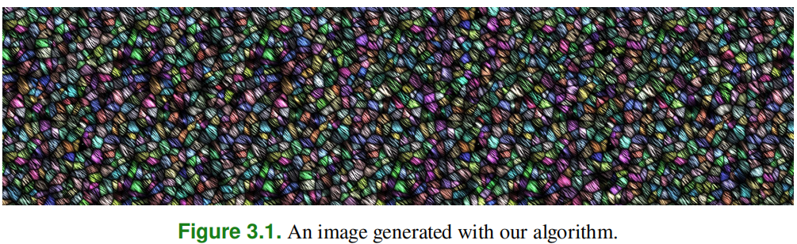
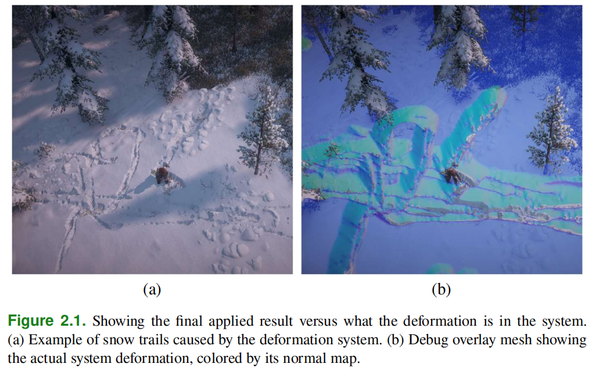
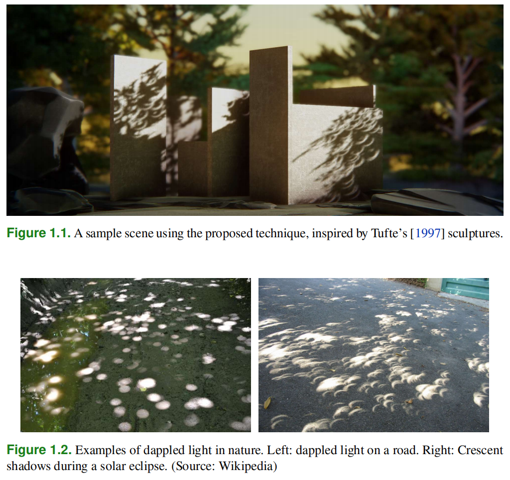
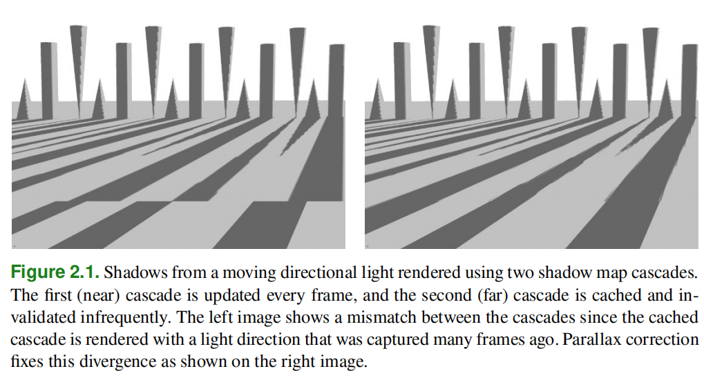
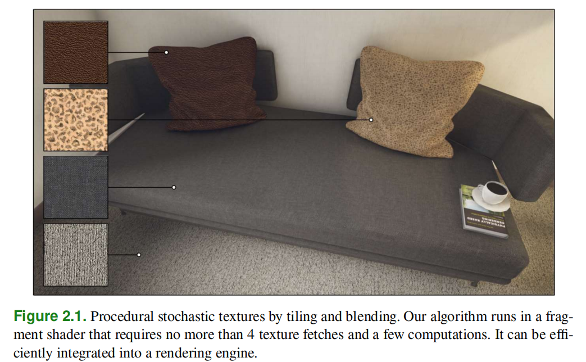
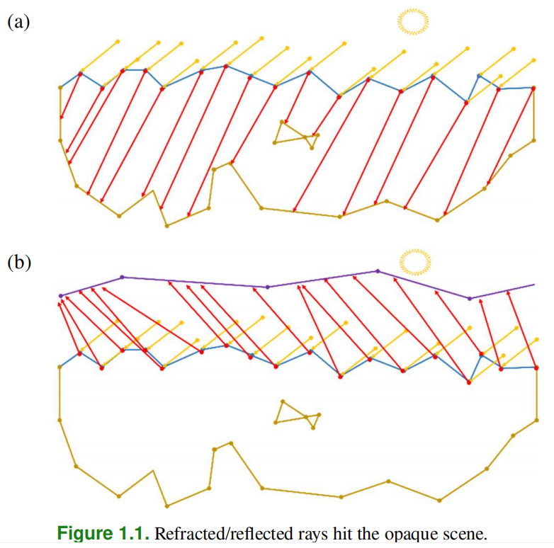
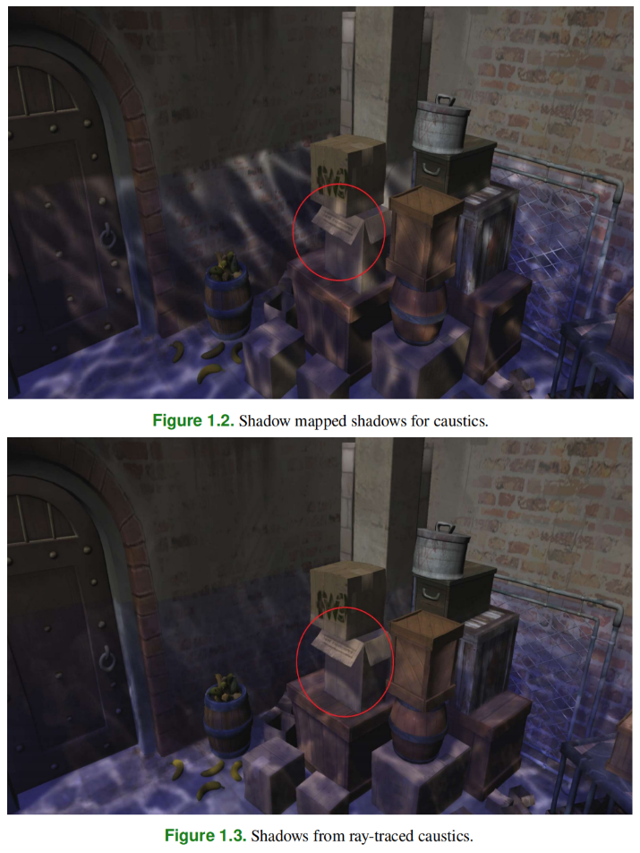
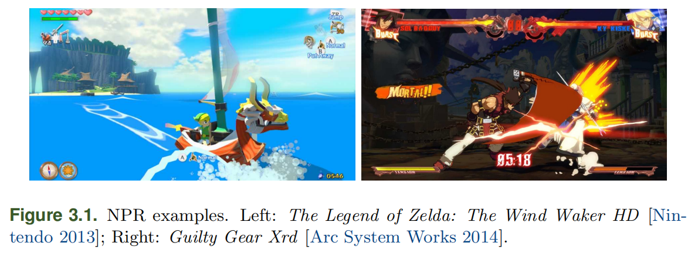

GPUProReference
Table of Contents
- GPUProReference
- 2019 2019GPUPro GPUZen2
- Adaptive GPU Tessellation with Compute Shaders Rendering Subdivision
- Applying Vectorized Visibility on All Frequency Direct Illumination Rendering PRT
- Nonperiodic Tiling of Noise-based Procedural Textures Rendering ProceduralContentGeneration PCG
- Rendering Surgery Simulation with Vulkan Rendering SurgicalSimulation
- Skinned Decals Rendering Decals
- Real-Time Fluid Simulation in Shadow of the Tomb Raider EnvironmentalEffects FluidSimulation
- Real-time Snow Deformation in Horizon Zero Dawn: The Frozen Wilds EnvironmentalEffects Snow
- Soft Shadow Approximation for Dappled Light Sources Shadows SoftShadows
- Parallax-Corrected Cached Shadow Maps Shadows OpenWorld CachedShadowMaps
- Real-Time Layered Materials Compositing Using Spatial Clustering Encoding 3DEngineDesign LayeredMaterials
- Procedural Stochastic Textures by Tiling and Blending 3DEngineDesign PCG Textures
- A Ray Casting Technique for Baked Texture Generation 3DEngineDesign GPUBaking
- Writing an Efficient Vulkan Renderer 3DEngineDesign Vulkan Renderer
- glTF—Runtime 3D Asset Delivery 3DEngineDesign glTF
- Real-Time Ray-Traced One-Bounce Caustics RealtimeRayTracing Caustics
- Adaptive Anti-Aliasing using Conservative Rasterization and GPU Ray Tracing RealtimeRayTracing AntiAliasing
- 2017 2017GPUPro GPUZen1
- Attributed Vertex Clouds GeometryManipulation
- Rendering Convex Occluders with Inner Conservative Rasterization GeometryManipulation
- Stable Indirect Illumination Lighting
- Participating Media Using Extruded Light Volumes Lighting
- Deferred+ Rendering
- Programmable Per-pixel Sample Placement with Conservative Rasterizer Rendering
- Mobile Toon Shading Rendering NPR ToonShading
- High Quality GPU-efficient Image Detail Manipulation Rendering
- Linear-Light Shading with Linearly Transformed Cosines Rendering
- Profiling and Optimizing WebGL Applications Using Google Chrome Rendering
- Scalable Adaptive SSAO ScreenSpace SSAO
- Robust Screen Space Ambient Occlusion ScreenSpace
- Practical Gather-based Bokeh Depth of Field ScreenSpace
- Efficient Stereo and VR Rendering VirtualReality VR
- Understanding, Measuring, and Analyzing VR Graphics Performance VirtualReality VR
- Optimizing the Graphics Pipeline with Compute Compute
- Real Time Markov Decision Processes for Crowd Simulation Compute
- 2016 2016GPUPro
- 2015 2015GPUPro
- 2014 2014GPUPro
- 2013 2013GPUPro
- 2012 2012GPUPro
- 2011 2011GPUPro
- 2010 2010GPUPro
- 2019 2019GPUPro GPUZen2
GPUProReference note.
<!– more –>
GPUProReference
2019 2019GPUPro GPUZen2
Adaptive GPU Tessellation with Compute Shaders Rendering Subdivision
当图元投射到几个像素以上时，GPU 光栅处理器的效率最高。如果低于这个限度，Z缓冲区就会开始出现 aliasing，并且着色率会急剧下降 [Riccio 2012]。这使得几何上复杂的场景的渲染具有挑战性，因为任何中等距离的多边形都会投射到亚像素大小。为了最大限度地减少这种亚像素投影，一个简单的解决方案是随着模型靠近摄像机，程序地 refining 粗略的网格。在本章中，我们感兴趣的是推导出这种程序地细化技术，用于任意多边形网格。
传统上，网格细化是通过递归算法在 CPU 上计算的，如四叉树[Duchaineau 等人，1997，Strugar 2009]或细分曲面[Stam 1998，Cashman 2012]。遗憾的是，基于 CPU 的细化(refinement)现在已经由于 CPU 到 GPU 的大量几何数据流遇到瓶颈了。为了避免这些大量的数据传输，大量的工作致力于通过利用细分着色器在 GPU 上直接实现或模拟这些递归算法（例如，见[Niessner 等人，2012。Cashman 2012, Mistal 2013]）。虽然细分着色器为网格细化提供了一个灵活的、硬件加速的机制，但它们在两个方面仍然受到限制。首先:它们最多只能允许 log64=6 级的细分。第二，它们的性能随着细分深度的增加而下降[AMD 2013]。
在下面的章节中，我们将介绍一种基于 GPU 的细化方案，它不受 tessellation shaders 的限制。具体来说，我们的方案允许在内存成本不变的情况下任意细分水平。我们通过对场景中每个多边形的隐式（基于三角形）细分方案进行操作来实现这一点。在一个专门的计算着色器中，从一个紧凑的双缓冲阵列中读取和写入。首先，我们在第 1.2 节中展示了我们如何管理我们的隐式细分方案。然后，我们在第 1.3 节中提供了我们编写的利用我们的细分方案的渲染程序的实现细节。
Applying Vectorized Visibility on All Frequency Direct Illumination Rendering PRT
PRT(Precomputed Radiance Transfer 预计算辐射度传播)是使用某些预计算函数来照亮表面的一个通用框架。如今它在更为精细的渲染应用中发挥着重要作用（例如，[Elcott 2016]）。PRT 的准备工作通常包括一个预计算步骤，这是一个计算成本很高的步骤，用于评估场景中的光线反弹和传输。输出是一组 Transfer 函数，而这些转移函数通常是以每个顶点的方式准备的。这些传递函数可以通过计算模拟（例如光线追踪）来准备，也可以用一些专门设计的设备从现实世界中测量[Matusik 等人，2003]。无论是模拟还是测量。PRT 的基本目标仍然是相同的，即为渲染应用提供即时访问的转移函数。
PRT 的表述具有普遍性，以至于它实际上可以捕捉到所有可能的由照明引起的视觉效果，包括阴影、相互反射、照明功能等等。虽然 PRT 可以呈现许多视觉特征，但真正的挑战是如何使它也变得高效；其中有两个挑战。首先，PRT 方法需要一个有效的方法来求解可能有几十万个样本的辐射度方程（即一个数值积分）。求解必须高效，因为我们可能需要对每一帧进行几百万次求解（例如，对屏幕上的每个像素进行求解；屏幕分辨率为 1280x962）。其次，他们需要一种算法，将传递函数压缩到一个可管理的数据大小。当局部效应（例如，依赖于视角的照明、阴影和相互反射）被包括在内时，预先计算的传递函数的数据大小可能是千兆字节。即使内存消耗和分配介质的带宽不是一个问题，也不值得为照明花费所有的内存。
值得庆幸的是，人类的视觉系统对照明与现实有一定的差异是非常宽容的。即使我们把照明求解简化到一个极端的程度，渲染出来的结果仍然可以在视觉上令人愉悦。例如，如果我们将视角位置限制在不确定的远处的一个点上，并忽略局部效果，PRT 将简化为 MatCap[Brauer 2010, Moreno 2018]；如果我们只忽略局部效果，PRT 将简化为对光泽反射进行 mipmapping 的环境映射[Scheuermann and Isidoro 2006]；如果我们将视图位置限制在一个点上并固定三维模型的姿势（即基本上是静态图像），PRT 将简化为 Image Based Lighting [Russell 2015] 。除了简化的方法之外，还存在许多 PRT 方法[Ng 等人，2003，Ng 等人，2004，Sloan 等人，2003，Tsai 和 Shih，2006，Kautz 等人，2002，Liu 等人，2004，Ben-Artzi 等人，2006，Lam 等人，2010，Wang 等人，2009，Wang 等人，2013]，它们通过将传输函数作为一个整体建模来正面解决这个问题，而不是在不方便的时候丢弃这些效应。
本文介绍了矢量可见性的实现和渲染算法[Ho 等人，2018]，即 PRT 方法的一个变种。它与其他 PRT 方法的区别在于，它的可见性函数以矢量图形形式表示。这种根本性的差异是如此深刻，以至于相应的渲染算法与其他 PRT 方法相比，经过了非常不同的路径演变；这导致了一系列不同的优势和劣势。
我们的 PRT 方法可以保持高频阴影的保真度，即使是粗略细分的三维模型，也可以准确地计算出大量的光源；它还可以处理从镜面到模糊反射的镜面成分 1。支持每顶点和每片段的直接照明。它还可以利用动态细分来提供更好的可扩展性，它比 per-fragment 的速度更快，质量比 per-vertex 的更好。现实世界中的镜面部分确实有阴影 2；而我们的算法可以捕捉到镜面部分阴影的视觉印象 3。
Nonperiodic Tiling of Noise-based Procedural Textures Rendering ProceduralContentGeneration PCG
几十年来，程序性噪声函数一直是计算机图形中增加视觉保真度的关键工具之一。它们是景观几何(landscape geometry)合成、创建包含颜色和法线等表面属性的纹理、模拟大气效果和许多其他任务的基础。
随着游戏环境规模的不断扩大和对现代游戏细节的期待，开发者越来越频繁地面临着内容制作的挑战。减少编写和迭代内容所需的时间始终是行业内最热门的话题之一。
程序性内容创作是解决这一问题的一个越来越流行的方案。程序化方法使开发人员能够自动化和简化任务，从对象放置到纹理创建。许多大型工作室以及没有能力手工制作资产的独立开发者已经采用了这些方法。这些方法极有可能成为行业标准，并成为所有现代内容管线的一个组成部分。
大多数情况下，游戏不能在运行时求解程序性噪声函数，而是将预计算的结果存储在纹理中。他们中的大多数只使用硬件提供的基本平铺选项。考虑到在 GPU 上高效求解的噪声函数是周期性的，周期相对较小。这两种情况都会导致重复或细节的损失。克服这种情况的常见方法是提高纹理分辨率，增加贴花纹理或采用多纹理。这将导致内存消耗和内存带宽需求的增加。
在本章中，我们介绍了一种将基于噪声的程序性纹理合成与非周期性平铺算法相结合的方法。我们描述了对几个流行的程序性噪声函数的修改，这些函数直接产生包含最小的完整 Wang tile set 的纹理图。我们的方法可以作为预处理步骤或在应用程序运行时使用。此外，我们对在 GPU 上实现 Wang 瓦片的算法[Wei 2004]做了一些改进。我们展示了我们的修改是如何为大量基于噪声的程序生成的纹理实现非周期性平铺的（见图 3.1 中的一个例子）。最后，我们分析了这些修改对性能的影响，并讨论了它们的局限性。

Rendering Surgery Simulation with Vulkan Rendering SurgicalSimulation
虽然外科模拟需要与游戏相同的渲染功能，但关键的差异使得针对模拟的优化和引擎设计决策成为必要，而这些在游戏的渲染引擎中通常是不需要或不提供的。鉴于我们独特的用例，我们利用 Vulkan API 的明确性（与 OpenGL 相比）来开发一个用于外科模拟的渲染引擎。在这篇文章中，我们解释了我们是如何围绕手术模拟定制渲染引擎设计的，包括高层的设计决策如何传播到 Vulkan 的低层使用。
为了实现这一目标，我们的渲染架构被设计为灵活、可维护和高效。在手术用例中，软组织是由可变形的网格建模的，这些网格由我们高效的内存系统专门处理。我们展示了性能如何与我们的存储系统相匹配。随后，我们介绍了一个在虚拟环甲膜切开术（CCT）三维模拟器中使用我们的渲染器的案例研究。
Skinned Decals Rendering Decals
通过允许玩家改变游戏环境来增加互动性，动态添加到场景中的 Decals(贴纸)是增加互动性的一个好方法。对于静态环境来说，一个有效的方法是使用延迟贴花[Krasnigg 2010], [Persson 2011]。然而，一般来说，延迟贴花在有蒙皮的网格上不能提供令人信服的结果。一个典型的用例是向角色射击，并在弹丸的撞击位置产生伤口。我们将介绍一种在任意蒙皮网格上动态添加贴花的技术，该技术与常见的渲染架构兼容，并易于集成到现有的渲染引擎中。
Real-Time Fluid Simulation in Shadow of the Tomb Raider EnvironmentalEffects FluidSimulation
流体模拟已经被学术界和视觉特效行业彻底研究过了。然而，在实践中，流体模拟已经在很少的大型 AAA 游戏作品中得到了实现。
在本章中，我们介绍了我们在《古墓丽影》游戏中的实时流体模拟实现。我们模拟了人物和流体物质之间的动态互动：水面上的油点、漂浮的海藻等。
具体来说，我们的贡献是。
- 使用可滚动的纹理为广大地区提供流体模拟解决方案（1.3.3 节）。
- 简单而有效的方法来计算粘度（第 1.3.6 节）。
- 与帧速率无关的流入算法（第 1.3.4 节）。
- 基于 PIC（particle in cell）的数值稳定方法用于藻类模拟（第 1.3.8 节）。
- 在 Xbox One 上 0.5 毫秒内运行 256x256 的网格。
Real-time Snow Deformation in Horizon Zero Dawn: The Frozen Wilds EnvironmentalEffects Snow
让动态的人物和物体与环境互动，使场景更有沉浸感和活力。通常情况下，游戏会有某种形式的植物与角色的互动，当角色移动时，叶子和草就会弯曲出来。另一个例子是在雪地上行走时的地面投影贴花。这两种常用的技术都缺乏持久性和可扩展性；树叶不会被永久变形或压碎，雪地上的脚印通常对同时活动的贴花数量有一个上限。
《地平线零的黎明：冰冻荒野》是《地平线零的黎明》1 的扩展，它发生在一个新的雪山地区。雪覆盖了大部分景观，因此我们需要可信的雪，它解决了现有技术的一些缺点，并在这个特定项目的限制和要求下工作。图 2.1 概述了我们取得的成果。

我们的要求是。
- 我们需要任何动态物体都可以引起实时的雪地。
- 它必须在一个巨大的开放世界中工作，并在某些静态物体上工作，如岩石和屋顶。
- 它必须在 GPU 上运行得非常快，因为 GPU 框架已经为基本游戏进行了布局和优化。
- 为了避免增加扩展的下载量，我们不能做任何重大的资产重构，也因为我们无法抽出艺术家来手动检查所有的内容并为新系统进行微调。
Soft Shadow Approximation for Dappled Light Sources Shadows SoftShadows
常见的阴影渲染技术依赖于通过包含与光源距离有关的信息的缓冲区来解决可见性问题。这些缓冲区通常被称为阴影图[Williams 1978]，尽管可以用各种算法对结果进行过滤以获得平滑的半影效果，但过滤是昂贵的，而且不考虑光源的大小和形状。众所周知的滤波方法的例子包括 Percentage-Closer-Filtering[Reeves 等人，1987]，Percentage-closer soft shadows[Fernando 2005]，Variance Shadow Maps[Donnelly 和 Lauritzen 2006]和 Moment Shadow Maps[Peters 和 Klein 2015]。最近的一种方法使用光线追踪和去噪来估计多边形区域光产生的半影[Heitz 等人，2018]，但需要复杂的渲染管线设置，大多数实时引擎可能无法使用。
鉴于分析逼近区域灯产生的半影的复杂性，这些实时技术通常忽略了某些高频物体在被这种灯照射时可能产生的针孔效应。本文提出了这种效应的近似值，在图 1.1 中可以看到它的作用。在摄影中，这种现象被称为斑驳的光线，在树影中非常有特点：当树叶非常接近时，一小块光可以穿过它，同时基本上把太阳的形状投射到阴影接收器中。此外，在日食发生时，像图 1.2 所示的新月形阴影的情况下，它特别明显。Minnaert[1937]对该主题进行了全面的介绍。

这种现象不仅发生在深度空间中完全无限小的洞上，因为它是复杂可见度函数的一个 artifact。然而，只要识别出这些点，并在任何其他常规技术的基础上使用减法遮蔽，就可以近似地达到这种效果。本文将描述一个简单实用的算法，它使用一个任意形状的纹理来表示投射的光线形状。此外，这里介绍的大部分例子将与树影有关，因为它是这种现象最突出的情况之一，同时在游戏和实时引擎中也很常见。其他出现这种效果的情况是金属栅格，编织的图案和某些家具。
Parallax-Corrected Cached Shadow Maps Shadows OpenWorld CachedShadowMaps
渲染大视距的阴影往往需要处理大量的投射阴影的物体。许多游戏引擎，在使用 ShadowMaps 进行远距离阴影渲染时，会选择一些缓存方案，允许将 ShadowMap 的渲染成本分布在几个帧上，从而利用帧与帧之间的一致性，每帧只渲染影子投射者的子集，例如，Schulz 和 Mader[2014]和 Acton[2012]。一些游戏引擎会缓存从阴影图中得到的 occlusion 数据，而不是保留普通的阴影图，例如 Valient [2012]和 Gollent [2014] 。
然而，当投射阴影的光是动态的，例如，在一个具有动态昼夜周期的游戏中，太阳或月亮在天空中不断移动，从而使缓存的数据与当前的光线状态不一致时，缓存就有问题。我们必须经常使缓存失效以保持较小的分歧，这使得缓存成为一个效率较低的优化，或者将缓存的阴影视为实际阴影的一个非常粗略的近似值，因为在近距离观察时误差太明显了。
在本文中，我们描述了一种视差校正算法，使用静态 ShadowMap 渲染动态光源的 sweeping 阴影。在《Far Cry 5》中，视差校正的使用使得用两种不同的技术渲染的动态阴影之间实现了相当的无缝过渡：近处的阴影采用层叠式阴影图（CSM）每帧更新一次，远处的阴影采用自适应阴影图（ASM）覆盖 500 米范围，每 2500 帧更新一次。因此，我们使用相对昂贵的 CSM 来渲染距离玩家相机仅 30 米范围内的阴影，这对于一个开放世界的游戏来说是相当短的范围。

Real-Time Layered Materials Compositing Using Spatial Clustering Encoding 3DEngineDesign LayeredMaterials
大多数现代渲染引擎都利用简单而知名的材质库和分层材质表现来制作详细而高质量的游戏内材质。现在纹理管线中使用的流行工具（例如 Allegorithmic Substance Painter 和 Quixel NDO Painter）也是基于分层材质的概念[Neubelt 和 Pettineo 2013, Deguy 等人 2016, Karis 2013]。
在这一章中，我们介绍了一种使用分层材质方法的算法，它允许我们使用大量的层来实时创建复合材质。我们的算法旨在尽可能地模仿 Allegorithmic 的 Substance 纹理管线，但要做到实时。所提出的技术基于多种知名材质的混合，其中一个共享材质库定义了合成中使用的每种材质的表面属性。
使用我们的方法，每个网格可以有一个独特的 UV 集和几个独特的纹理混合遮罩，每个混合遮罩定义了库中材质的每像素混合权重。库中的每种材质都可以使用细节纹理技术来提高表面细节的分辨率。使用带有细节纹理的材质进行构图，具有打破纹理分辨率障碍的优势，使我们能够以非常高的分辨率制作出最终的构图。在 4K 时代，拥有高分辨率的游戏内材质尤其关键。
我们的方法支持在运行时替换材质库和纹理混合遮罩的透明度修改。在运行时替换材质会使合成的材质具有不同的视觉效果，这对于支持用户生成内容或游戏内定制的游戏尤其重要。所介绍的技术被用于渲染《装甲战争》中的装甲车辆，这是一款由 My.com 发行的多人坦克动作游戏。
Procedural Stochastic Textures by Tiling and Blending 3DEngineDesign PCG Textures
Heitz 和 Neyret[2018]最近为随机纹理（通常是自然纹理，如苔藓、花岗岩、沙子、树皮等）引入了一种新的按实例程序化纹理方法。他们的算法将一个小的纹理实例作为输入，并合成一个具有相同外观的无限输出，如图 2.1 所示。该算法是一个简单的 tiling-and-blending 增强方案，由一个直方图保护的混合算子，以防止由线性混合引起的视觉 artifacts。因此，实现的基石是这个新的混合算子，它需要专门的预计算。在这一章中，我们研究了这种算法的实际实现细节，与原文相比有一些改进。本章附有一个 C++的 OpenGL 演示，这些代码片段都是从中提取的。

A Ray Casting Technique for Baked Texture Generation 3DEngineDesign GPUBaking
烘焙是一个将表面数据从高多边形几何体转移到低多边形几何体的纹理的过程。通过烘焙，模型的法线、顶点颜色、位移等静态数据，甚至环境遮蔽和漫反射照明等阴影项都可以在低多边形网格上有效地表现出来。通过这种方式，可以用大大减少的几何体提供更多的细节。多年来，这一过程在实时系统的资产准备中一直很关键，而且可能会继续得到大量使用。
由于烘培通常是一个离线过程，早期的工具依靠 CPU 处理以获得更大的灵活性。计算时间在几分钟和几小时的数量级上。最近的实施方案使用了 GPU 处理，效果很好。增加的并行性以及对一般计算的支持，特别是对光线追踪的支持，使得 GPU 烘焙成为一个有吸引力的选择。现代系统可以在几秒钟甚至实时地烘焙结果。本章概述了一种在 GPU 上利用用户输入来烘焙几何体的技术，以及这一过程中固有的一些潜在的陷阱。
本章所遵循的技术演示是基于 Marmoset Toolbag 中使用的烘焙器。这个例子可以在以下网站下载:
https://github.com/alaingalvan/gpu-zen-2-baker/
Writing an Efficient Vulkan Renderer 3DEngineDesign Vulkan Renderer
Vulkan 是一个新的显式(explicit)的跨平台图形 API。它引入了许多新的概念，即使是经验丰富的图形程序员也可能不熟悉。Vulkan 的关键目标是性能–然而，要达到良好的性能，需要深入了解这些概念和如何有效地应用它们，以及特定的驱动实现如何实现这些。本文将探讨诸如内存分配、描述符集管理、命令缓冲区记录、管线障碍(pipeline barriers)、渲染 Passes 等主题，并讨论如何优化目前产品的桌面/移动 Vulkan 渲染器的 CPU 和 GPU 性能，以及展望未来的 Vulkan 渲染器可以做哪些不同的事情。
现代渲染器正变得越来越复杂，必须支持许多不同的图形 API，这些 API 具有不同的硬件抽象水平和不相连的概念集。这有时使得以相同的效率水平支持所有的平台成为一种挑战。幸运的是，对于大多数任务，Vulkan 提供了多种选择，这些选择可以很简单，即重新实现其他 API 的概念，由于专门针对渲染器需求的代码，效率更高；也可以很困难，即重新设计大型系统，使其最适合 Vulkan。我们将在适当的时候尝试涵盖这两个极端–归根结底，这是一个在支持 Vulkan 的系统上的最大效率与实施和维护成本之间的权衡，每个引擎都需要仔细挑选。此外，效率往往取决于应用–本文的指导是通用的，最终通过在目标平台上对目标应用进行分析，并根据结果做出明智的实施决定，才能实现最佳性能。
本文假设读者已经熟悉了 Vulkan API 的基础知识，并且希望更好地理解它们，或者学习如何有效地使用该 API。
glTF—Runtime 3D Asset Delivery 3DEngineDesign glTF
能够进行高质量 3D 渲染的客户端设备和网络浏览器的广泛使用，为涉及 3D 资产的新应用领域提供了机会。这些应用包括从在线产品展示和配置网站、虚拟博物馆、地理信息系统到一般虚拟环境或移动设备上的 3D 视频游戏。尽管这些应用种类繁多，但它们对三维资产提出了许多类似的要求。为了满足这些要求，Khronos Group 设计了 glTF–一种 3D 资产的传输和交付格式。它的开发是建立在 3D 内容创造者和提供者、应用和引擎开发者以及最终用户的共同努力之上的。自 2015 年首次发布 glTF 以来，来自不同应用领域的软件公司已经采用了该格式，它正在成为高效实时渲染的 3D 资产交付标准。
本章解释了 glTF 所实现的目标和特性，以及它们的技术实现。本章阐述了 glTF 在 3D 内容创建工作流程中的作用，展示了可用于支持内容创建过程每一步的工具和库，以及 glTF 如何开辟依靠高效传输和渲染高质量 3D 内容的新应用领域。
Real-Time Ray-Traced One-Bounce Caustics RealtimeRayTracing Caustics
本章研究了如何利用 DirectX 12 实时光线追踪 API DXR 来简化和创新当前渲染实时光影的方法。我们假设必要的 DXR Bounding Volume 加速结构已经在游戏引擎中实现，以实现其他基于光线追踪的算法。
与现有的解决方案相比，使用 DXR 在寻找折射和反射光线的镜面交叉点和动态 3D 场景方面有几个好处。图 1.1(a)描述了这一点–来自太阳的黄色光线与折射表面相互作用，并"变成"折射的红色光线，照射到棕色的接收几何体上。图 1.1(b)显示的是反射光线，它照射在紫色的接收几何体上。

许多游戏避免寻找与整个游戏场景的交点，而只计算与地平面或 3D 盒子内部的交点。因此，所产生的光晕不能有阴影，而阴影是许多不连贯的折射/反射光线的结果。通常情况下，阴影是由 ShadowMap 生成的，它只从单一视角产生阴影，例如，从光线的视角。
对于一个有折射水界面的场景（未显示），图 1.2 显示了由阴影图产生的阴影。结果，箱盖的阴影轮廓是直的。图 1.3 显示的是由非相干折射光线产生的影子，因此箱盖的影子是弯曲的，并随着表面的移动以物理上正确的方式变形。

Adaptive Anti-Aliasing using Conservative Rasterization and GPU Ray Tracing RealtimeRayTracing AntiAliasing
抗锯齿是一类用于消除因采样率不足而产生的图像 artifacts 的技术。MSAA[Akeley 1993]是一种流行的抗锯齿技术，它对可见度的采样率不同于典型的每个像素每个基元一次的着色率。尽管在几何抗锯齿方面很有效，但由于以采样率存储深度和颜色样本，MSAA 会产生较高的存储成本。此外，在颜色压缩不能很好地压缩颜色数据的情况下，它可能会遭受更高的带宽使用。由于这些原因，MSAA 产生高的图像质量需要相对较高的成本。
理想情况下，我们希望获得 MSAA 的图像质量，而不需要支付高昂的相关费用。当一个基元完全覆盖一个像素时，就没有必要做进一步的可见性计算了。当一个像素被基元部分覆盖时，我们需要确定每个相交的基元覆盖了多少像素，以计算出正确的可见度。利用这一知识，我们提出了一种方法，可以识别 "复杂 "或 "有趣 "的像素，这些像素需要比单一栅格样本更精确地计算可见度。然后，我们讨论了两种方法来计算已识别的像素的可见度，并提高了准确性。
2017 2017GPUPro GPUZen1
Attributed Vertex Clouds GeometryManipulation
Rendering Convex Occluders with Inner Conservative Rasterization GeometryManipulation
Stable Indirect Illumination Lighting
Participating Media Using Extruded Light Volumes Lighting
Deferred+ Rendering
Programmable Per-pixel Sample Placement with Conservative Rasterizer Rendering
Mobile Toon Shading Rendering NPR ToonShading
逼真的渲染是计算机图形行业的一个共同目标。这种渲染方法意在通过逼真地模拟光线与环境的相互作用来产生高质量的图像，而且往往对计算资源有很高的要求。有时，艺术方向或计算资源的缺乏会促使开发者使用其他的渲染技术，这些技术不是基于物理光照模型，也不是为了写实。非逼真渲染（NPR）技术已被广泛采用，用于为三维渲染赋予绘画、素描或卡通的艺术风格。
在这一章中，我们通过一个移动平台可用的卡通渲染技术来描述一种独特的艺术风格。Toon 着色是视频游戏中经常使用的一种 NPR 技术，用于给渲染的场景带来卡通化的一面（图 3.1）。为了实现这一点，有必要使 3D 场景看起来很平坦，通常是通过非真实的照明模型，用较少的阴影颜色和绘制物体轮廓来实现。通过使用 halftone 等影印技术(reprographic techniques)可以进一步增强视觉效果，半色调技术通过使用不同大小或间隔的几何图形（通常是点）在网格状的图案中模拟连续色调图像。

建议的着色器的想法来自于为游戏实时使用 3D 来模拟流行艺术风格的愿望。最初，我们试图通过添加纹理使轮廓看起来像报纸剪报，用 overlay blending 来模拟这种效果。我们添加了粒子来补充轮廓，并给剪影带来更大的活力。为了使这种技术很好地发挥作用，我们希望每个动画帧都像剪纸一样；然后，有必要使每个帧与粒子系统同步。然而，对于通常帧率（高达 60 帧）的动画，这种效果变成了一种干扰，在视觉上并不讨好。我们试图使用非插值动画，以便有一个阶梯式的动画，以增强姿势，并传达剪纸的想法，使其在屏幕上。尽管如此，我们使用的引擎按标准强制在帧之间进行插值，不允许我们达到预期效果。由于我们无法使效果与动画同步，我们放弃了这个想法。
我们尝试的另一个图形效果是使用偏移值（暴露在材质中），用于漫反射纹理的每个颜色通道，以模拟一种色差。如果小心使用的话，这种技术效果很好，但是非常大的偏移量会使 UV islands 变得明显。最后，这些实验并没有在最终的着色器中出现。
在这一章中，我们描述了构成我们独特艺术风格的各个技术，包括平坦的阴影（第 3.3 节），柔和的光线混合（第 3.4 节），基于半色调的阴影（第 3.5 节）和基于阈值的 inverted hull 轮廓（第 3.6 节）。我们在第 3.7 节中介绍了这些技术的实现，最后在第 3.8 节中得出最终结论。